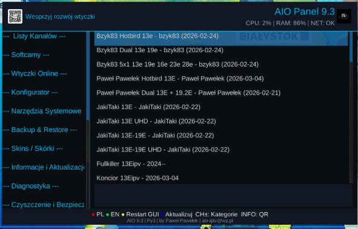

Wtyczki i Pobieranie
Wersje, opisy oraz linki do pobierania.
AIO Panel v9.3 (Enigma2 • Universal)

AIO Panel 9.3 – Aktualizacja
W wersji 9.3 zaktualizowano wtyczkę z 9.2 do 9.3, dodano MyUpdater v5.1, poprawiono funkcję „Pobierz picony (transparent)”, przeanalizowano interfejs pod kątem zbyt dużego rozmiaru okna na standardowym skinie mymetrix i podobnych skinach HD oraz uporządkowano pliki wersji i zawartość paczki.
Aktualizacja: wykonaj ją z poziomu wtyczki — niebieski przycisk lub pobierz nową paczkę IPK poniżej.
Najważniejsze zmiany (v9.3)
- Zaktualizowano wersję wtyczki z 9.2 do 9.3.
- Dodano MyUpdater v5.1.
- Poprawiono funkcję „Pobierz picony (transparent)” — podczas instalacji system pyta teraz o miejsce docelowe piconów i pozwala wybrać:
- lokalizację domyślną,
- wykryte urządzenie zewnętrzne,
- ręczne wskazanie katalogu instalacji.
- W Super Konfiguratorze funkcja piconów została pozostawiona bez zmian i działa nadal po staremu, na domyślnych ustawieniach.
- Na liście kanałów bukiety Azman zostały przeniesione na sam dół listy.
- Przeanalizowano interfejs wtyczki pod kątem zbyt dużego rozmiaru okna na standardowym skinie mymetrix i kilku podobnych skinach.
- Zmniejszono i dopasowano główne okna wtyczki tak, aby lepiej wyświetlały się na skinach HD.
- Zaktualizowano pliki wersji i opisy, w tym m.in.:
changelog.txt,- pliki instalacyjne,
- wpisy wersjonowania w paczce.
- Przeprowadzono porządki w kodzie i wpisach konfiguracyjnych:
- usunięto część starych, zbędnych danych po wcześniejszych wydaniach,
- pozostawiono wszystkie elementy wymagane do prawidłowego działania wtyczki,
- paczka została przebudowana i przygotowana jako nowa wersja 9.3.
Oglądaj i subskrybuj @AIOPanel
Znajdziesz tam informacje ode mnie oraz nowości związane z moją twórczością. Wejdź na kanał: YouTube / @AIOPanel ↗
Historia: AIO Panel v9.2 — VAVOO, widoczność w menu i poprawki Super Konfiguratora
W wersji 9.2 dodano m.in. instalator VAVOO (online), funkcję widoczności AIO Panel w menu tunera,
usprawniono Super Konfigurator oraz zmieniono sposób instalacji Softcam na skrypt (wget | bash) — działa także na obrazach bez Softcam w feed.
- Dodano instalator VAVOO (online).
- Widoczność AIO Panel w menu tunera: Menu → Ustawienia/System oraz Menu główne + naprawiono wykonanie akcji.
- Przeniesiono funkcję widoczności do zakładki „Narzędzia Systemowe”.
- Super Konfigurator: opcje DEPS/BASIC/FULL widoczne bezpośrednio w oknie wtyczki (bez dodatkowego wyboru).
- Softcam: instalacja skryptem (
wget | bash) — działa także na obrazach bez Softcam w feed. - Super Konfigurator FULL: poprawiona kolejność i stabilność (Lista Bzyk83 Hotbird 13E → Softcam (skrypt) → Oscam z feed (auto) → Picony Transparent → przeładowanie list → pełny restart).
- UI/Tooltip: uzupełniono/brakujące opisy funkcji + dodano opis zapasowy (aby opis nie był pusty).
Historia: AIO Panel v9.1.1 — poprawki Py2 + stabilna konwersja tekstu w GUI
W wersji 9.1.1 wprowadzono poprawki dla środowisk Python 2 (m.in. OpenATV 6.4 / VTi), gdzie występował losowy brak opisów/opcji w menu.
- Naprawa Py2: eliminacja losowego braku opisów/opcji w menu (OpenATV 6.4 / VTi).
- Konwersja typów tekstu w GUI: wymuszona poprawna konwersja w listach GUI
(Py2:
str/UTF‑8 bytes, Py3:str) — koniec pozycji typu<not-a-string>i znikających nazw funkcji. - Dodane instalatory wtyczek (w panelu): ChocholousekPicons, CIEFP Oscam Editor, FilmXY, FootOnsat, e‑stralker (z feedu).
Historia: AIO Panel v9.0 — przebudowa UI, Skins/Skórki, stabilność komend
Metody aktualizacji
Aktualizację możesz przeprowadzić na trzy sposoby:

- Niebieski przycisk: bezpośrednio w menu wtyczki.
- Polecenie Telnet/SSH: poprzez konsolę systemową.
- Plik IPK: ręczna instalacja z paczki.
Kluczowe nowości i zmiany (v9.0)

- NOWOŚĆ: Skins / Skórki: nowa zakładka z instalatorami skinów — zarządzanie wyglądem systemu bezpośrednio z panelu.
- Nowy interfejs Dashboard: przebudowa na układ Sidebar + Content z kolorystyką cyber-blue.
- Podział na sekcje: Listy Kanałów, Softcamy, Wtyczki Online, Konfigurator, Narzędzia Systemowe, Backup & Restore, Informacje i Aktualizacja, Diagnostyka, Czyszczenie i Bezpieczeństwo.
- Zmiana w NCam: instalacja z feedu systemu (opkg) — dostęp do najnowszej wersji na danym obrazie.
- Poprawki UI: ujednolicony wygląd sekcji oraz usunięcie błędu „podwójnego zaznaczenia” — aktywna jest tylko jedna kolumna.
- Wsparcie techniczne: kod QR wsparcia w nagłówku + ekran wsparcia w sekcji INFO z funkcją powiększenia (zoom).
- Stabilność: poprawiona kompatybilność między środowiskami Py2 i Py3 oraz zoptymalizowane wykonywanie komend systemowych.
Nagrania On Demand v2.0 (Enigma2)
Autor: Paweł Pawełek
Wersja: 2.0 • Data: 09.01.2026
📥 Pobierz Nagrania On Demand v2.0
Do czego służy wtyczka
Nagrania On Demand porządkuje listę nagrań i multimediów w Enigma2: ukrywa pliki techniczne
(.meta, .eit, .sc itd.), scala nagrania podzielone na części
(*.ts.001, *.ts.002…) i pokazuje prawdziwe tytuły odczytane z pliku .meta.
Najważniejsze funkcje
- Inteligentna lista: 1 pozycja = 1 film (bez „śmietnika” technicznego).
- Scalanie nagrań: odtwarzanie ciągiem nagrań podzielonych na części.
- Prawdziwe nazwy: tytuł z
.meta(jeśli istnieje), zamiast surowej nazwy pliku. - Obsługiwane formaty:
.ts,.mkv,.mp4,.avioraz audio (.mp3,.flac,.wavi inne).
Nowości w wersji 2.0 (09.01.2026)
Poniżej zestaw zmian i ulepszeń względem wersji 1.0.4 — dodane funkcje nagrywania i timery są realizowane możliwie „systemowo”, z fallbackami dla różnych image (OpenATV, OpenPLi i inne).
- Integracja z nagrywaniem systemowym (maksymalna kompatybilność): „Nagraj teraz” uruchamiane przez mechanizmy systemowe (InfoBar/REC), z fallbackami dla różnych dystrybucji.
- IPTV + SAT: nagrywanie bieżącego kanału działa również dla kanałów IPTV z list/bukietów (w zakresie dopuszczonym przez dany system); timery mogą być tworzone dla usług z bukietów, w tym IPTV.
- EPG (systemowe): otwieranie „Pełnego EPG” i „EPG bieżącego kanału” w sposób możliwie systemowy, z fallbackami do dostępnych ekranów EPG (
GraphMultiEPG/MultiEPG/EPGSelection). - Dodaj timer ręcznie — naprawa crasha: usunięto green screen wynikający z różnic w wymaganych argumentach
TimerEntry; wprowadzono stabilną ścieżkę:InfoBar/TimerEditList→ fallback doTimerEntryz poprawnie utworzonym obiektem timera. - Stabilność i zgodność: odporność na brakujące metody/klasy w zależności od dystrybucji (różnice nazw metod, dostępność ekranów).
- Język / tłumaczenie PL/EN: pełne napisy PL/EN zależne od języka ustawionego w systemie (Polski → PL, inny → EN) + uporządkowane teksty pod kątem poprawnego wyświetlania znaków.
Gdzie wtyczka szuka plików
- AUTO: skanuje typowe lokalizacje nagrań (np.
/media/hdd/movie) oraz nośniki w/mediai/mnt. - RĘCZNY: możesz wskazać dowolny folder (opcja pod Żółtym przyciskiem).
Sterowanie pilotem
- OK — odtwórz
- STOP — zatrzymaj / powrót
- Czerwony — usuń (z potwierdzeniem; usuwa też pliki towarzyszące)
- Zielony — odśwież listę
- Żółty — ustawienia wyszukiwania (Auto/Ręczny, wybór folderu)
- Niebieski — wyjście
Galeria
Kliknij miniaturę, aby otworzyć podgląd w pełnym rozmiarze.


Wymagania: Enigma2 z Python 3 (OpenATV, OpenPLi itd.) + standardowy MoviePlayer w systemie.
OpenCamView v1.3 (Enigma2)
Version: 1.3
Do czego służy wtyczka
OpenCamView umożliwia podgląd kamer IP w Enigma2 po RTSP bez przerabiania list kanałów. Kamery dodajesz i edytujesz wprost z GUI (nazwa, IP, port, login, hasło, ścieżka RTSP), a podgląd uruchamiasz jednym kliknięciem.
Najważniejsze funkcje
- Dodawanie / edycja / usuwanie kamer z poziomu wtyczki.
- OK — szybki podgląd wybranej kamery.
- INFO / EPG / HELP — tryb MultiView (TV + podgląd kamery w PiP).
- Skróty numeryczne 0–4 (m.in. Domofon/Intercom, eksport, pomoc).
- Eksport kamer do bukietu Enigma2 (usługi 4097) oraz eksport do pliku M3U.
- Wbudowany skaner sieci do szybkiego wyszukiwania kamer w LAN.
Sterowanie pilotem
- OK — odtwórz kamerę
- Zielony — dodaj kamerę
- Żółty — edytuj kamerę
- Czerwony — usuń kamerę
- Niebieski — skaner sieci
- INFO / EPG / HELP — MultiView (TV + PiP)
- 0 — ustaw wybraną kamerę jako Domofon/Intercom
- 1 — otwórz Domofon/Intercom
- 2 — eksport do bukietu
- 3 — eksport do M3U
- 4 — pomoc
- EXIT — wyjście
Galeria
Kliknij miniaturę, aby otworzyć podgląd w pełnym rozmiarze.


Wskazówka: jeżeli kamera nie odtwarza się, sprawdź poprawność RTSP (IP/port/ścieżka) i dostępność strumienia w sieci LAN.
IPTV Dream v6.5 (Enigma2)
Do czego służy IPTV Dream
IPTV Dream v6.5 pozwala wczytać listy IPTV (M3U URL/plik, Xtream Codes, MAC Portal), a następnie wyeksportować kanały do bukietów Enigma2, zainstalować źródła EPG (EPGImport) i pobrać/generować pikony. Ma też wygodny WebIF, żeby dane wklejać z telefonu/PC zamiast pilotem.
Najważniejsze zmiany (v6.5)
- MAC Portal (Stalker/MAG): automatyczna detekcja ścieżek + lepszy handshake w stylu MAG (nagłówki/UA, cookies, referer).
- Loader M3U: obsługa HTML/redirectów, JSON osadzonego jako string, URL bez http/https (auto‑uzupełnianie) + parametry po
|(np. User‑Agent, Referer). - Eksport i bukiety: naprawiony eksport wielu bukietów z portali MAC + eksport w tle (zapis strumieniowy, mniejsze zużycie RAM) + hurtowe usuwanie bukietów IPTV Dream.
- VOD/Seriale: stabilniejsze pobieranie dużych list + poprawny pasek postępu.
- Picony: wybór lokalizacji zapisu (tuner lub dowolny nośnik
/media/...). - WebIF/UI: pasek postępu 0–100 (aktualizacje w czasie rzeczywistym) + przycisk „Instaluj źródła EPG Import”.
- Diagnostyka: rozszerzone logowanie do
/tmp/+ spójny numer wersji w całym interfejsie.
🧾 Pełna lista zmian v6.5 (kliknij)
Stabilność i kompatybilność źródeł
- Usprawniono obsługę MAC Portal (Stalker/MAG): automatyczna detekcja ścieżek (
/c/,stalker_portal,portal,mag). - Lepszy handshake w stylu MAG (nagłówki/UA, cookies, referer) — większa zgodność z restrykcyjnymi portalami.
- Ulepszony loader M3U: obsługa HTML/redirectów, JSON osadzonego jako string, URL bez http/https (auto‑uzupełnianie).
- Wsparcie dla parametrów po
|(np.|User-Agent,|Referer). - Odporniejsze pobieranie na wolnych serwerach (zoptymalizowane timeouty/odczyt).
- Rozszerzone logowanie diagnostyczne (w tym błędy
Auth Failed).
Eksport, bukiety i zarządzanie
- Naprawiono eksport wielu bukietów z portali MAC.
- Eksport w tle, bez blokowania GUI + zapis strumieniowy (mniejsze zużycie RAM).
- Hurtem usuwanie bukietów wygenerowanych przez IPTV Dream.
- Bezpieczne, unikalne nazwy plików (brak nadpisywania).
- Przechwytywanie błędów z powiadomieniami dla użytkownika (mniejsze ryzyko GS/BSOD).
VOD / Seriale
- Lepsze pobieranie list VOD/Seriali (szczególnie MAC): dokładniejsze informacje o stanie, poprawny pasek postępu przy dużych listach.
Picony
- Wybór lokalizacji zapisu: tuner lub dowolny nośnik (
/media/...).
Interfejs i WebIF
- Pasek postępu: zakres 0–100 z aktualizacjami w czasie rzeczywistym.
- Zmieniono etykietę przycisku: „Instaluj źródła EPG" → „Instaluj źródła EPG Import".
Diagnostyka i wersjonowanie
- Spójny numer wersji w całym interfejsie, menu, WebIF i metadanych paczki.
- Rozszerzone logowanie do plików w
/tmp/dla kluczowych etapów ładowania i autoryzacji.
Skróty (pilot) — najważniejsze
- 1–9 / OK — wybór pozycji menu
- Czerwony — wyjście
- Zielony — sprawdź aktualizacje
- Żółty — instaluj źródła EPG Import
- Niebieski — eksport do bukietu
Galeria
Kliknij miniaturę, aby otworzyć podgląd w pełnym rozmiarze.


📖 Pełna instrukcja użytkownika + opis funkcji (kliknij)
1) Do czego służy IPTV Dream v6.5
- wczytanie listy IPTV z: M3U (URL), M3U (plik), Xtream Codes, MAC Portal (Stalker/MAG)
- szybki eksport kanałów do bukietów Enigma2 (standardowa lista TV)
- instalacja i przygotowanie źródeł EPG dla EPGImport
- pobieranie i generowanie piconów
- funkcje pomocnicze: ulubione, cache/historia, logi/debug, język PL/EN, aktualizacje
- WebIF: wpisywanie danych z komputera/telefonu
2) Wymagania
- Enigma2 + internet
- zalecane: EPGImport (z feedu, jeśli nie jest w systemie)
- LAN (jeśli używasz WebIF)
3) Instalacja
- Menu → Ustawienia → Zarządzanie oprogramowaniem → Instaluj lokalny pakiet (plik w /tmp)
- SSH:
opkg install /tmp/enigma2-plugin-extensions-iptvdream_6.5_all.ipk - Po instalacji zalecany restart GUI
4) Menu główne — pozycje 1–9 (skrót)
- M3U z URL
- M3U z pliku
- Xtream Codes
- MAC Portal
- Ulubione
- Zarządzanie
- Statystyki
- Web Interfejs (ON/OFF) + adres
- Aktualizacje
5) Eksport do bukietu (NIEBIESKI) — kluczowa funkcja
Po wczytaniu playlisty (M3U/Xtream/MAC) naciśnij NIEBIESKI, wybierz grupy do eksportu i poczekaj na odświeżenie bukietów.
6) EPG
Zainstaluj źródła EPG (ŻÓŁTY), a następnie uruchom import w wtyczce EPGImport.
7) Pikony
Funkcja „Pobierz pikony” zapisuje logo do /usr/share/enigma2/picon.
Gdy po pobraniu nie widać logo — wykonaj restart GUI.
8) WebIF — użycie
- Włącz WebIF w pozycji 8.
- Wejdź w przeglądarce na adres
http://IP_DEKODERA:9999. - Wklej dane (M3U/Xtream/MAC) i wyślij do dekodera (wtyczka musi być otwarta na tunerze).
9) Lokalizacje plików (dla zaawansowanych)
- Konfiguracja:
/etc/enigma2/iptvdream_v6_config.json - Portale MAC:
/etc/enigma2/iptvdream_mac.json - Ulubione:
/etc/enigma2/iptv_dream_favorites.json - Cache:
/tmp/iptvdream_v6_cache - Pikony:
/usr/share/enigma2/picon - Log:
/tmp/iptvdream.log - EPGImport:
/etc/epgimport/iptvdream.sources.xml,/etc/epgimport/iptvdream.channels.xml - Bukiety:
/etc/enigma2/userbouquet.iptv_dream_*.tv
Bezpieczeństwo: WebIF działa po HTTP bez logowania — używaj wyłącznie w sieci domowej i wyłącz, gdy nie jest potrzebny.
Wtyczki (Plugins)
Najnowsze wersje moich aplikacji — pobieranie + krótki opis. Szczegóły każdej wtyczki znajdziesz w osobnych zakładkach u góry.
- 📥 AIO Panel v9.3 Py2/Py3 Patch v9.1.1: naprawa losowego braku opisów/opcji w menu na Python 2 (OpenATV 6.4 / VTi) + poprawna konwersja tekstu w GUI (koniec „<not-a-string>”).
- 📥 IPTV Dream v6.5 IPTV: M3U / Xtream Codes / MAC Portal + eksport do bukietów Enigma2, EPGImport, pikony, WebIF.
- 📥 Nagrania On Demand v2.0 Py3 Porządek w nagraniach: bez plików technicznych (.meta/.eit/.sc), scalanie części, tytuły z .meta + integracja z nagrywaniem i timerami.
- 📥 OpenCamView v1.3 Py2/Py3 Podgląd kamer IP po RTSP w Enigma2 bez przerabiania list kanałów. Eksport kamer do bukietów + M3U.
- 📥 Picon Updater v1.2 Automatyczne pobieranie i aktualizacja pikon z GitHub + szybkie wdrożenie w systemie.
- 📥 MyUpdater v5.1 Py2/Py3 Updater/instalator: listy kanałów, pikony, softcamy + diagnostyka i rozpoznawanie dystrybucji.
- 📥 Simple IPTV EPG v1.3 Proste EPG dla kanałów internetowych — przypisywanie programu do kanałów IPTV.
Niezbędne i dodatki (Enigma2)
Przydatne paczki i narzędzia do instalacji/konfiguracji. (Bez ocen — same konkretne pliki).
- 📥 ServiceApp 0.5 (git106) Zmiana odtwarzacza systemowego (ServiceApp / exteplayer3) — często wymagane dla IPTV/VOD.
- 📥 StreamlinkProxy 8.0.0 Obsługa wybranych streamów przez streamlink (przydatne w części konfiguracji IPTV).
- 📥 OpenATV Softcam Feed v8.0 Softcam feed dla OpenATV.
- 📥 Picony Transparent 13°E (ZIP) Paczka pikon dla satelity HotBird 13E.
- 📥 Powiększenie pamięci — ZGEMMA H9S / H9.2S (ZIP) Skrypt do powiększenia pamięci (rozszerzenie przestrzeni).